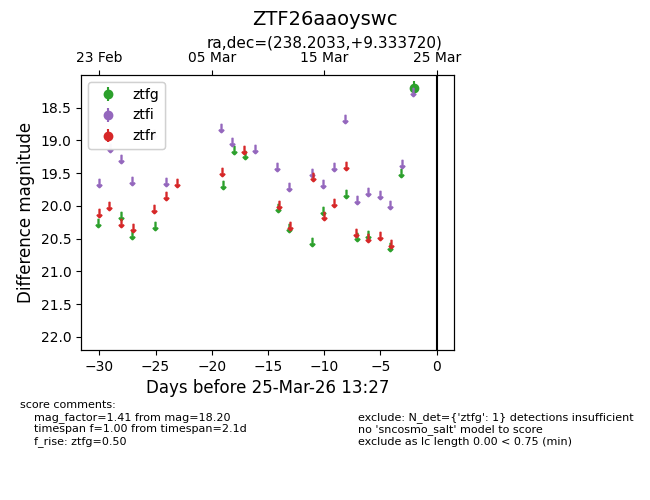
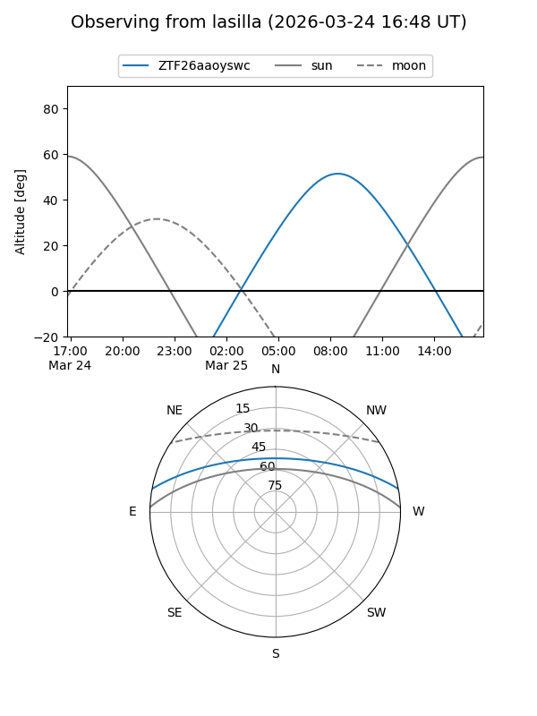
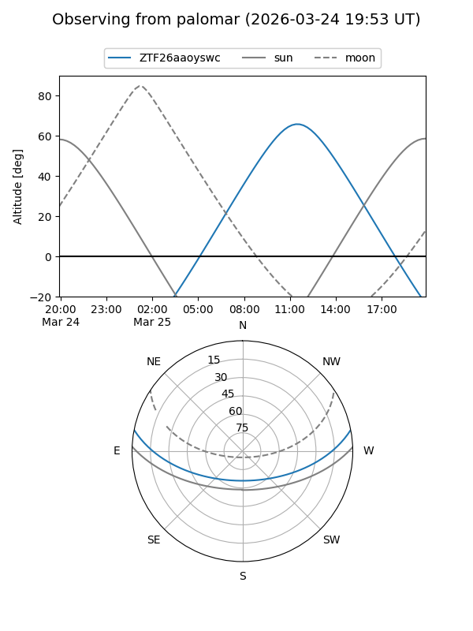

ZTF26aaoyswc
Target ZTF26aaoyswc at 2026-03-25 13:29
Aliases and brokers:
FINK: link
Lasair: link
ALeRCE: link
alt names
ZTF26aaoyswc (ztf,fink_ztf)
Coordinates:
equatorial (ra, dec) = 238.2033,+9.33372
equatorial (HMS+DMS) = 15:52:48.79,+09:20:01.39
galactic (l, b) = (19.1708,+43.72523)
Flags:
Photometry:
last ztfg=18.20
1 ztfg detections
Lightcurve

Visibility


Additional plots